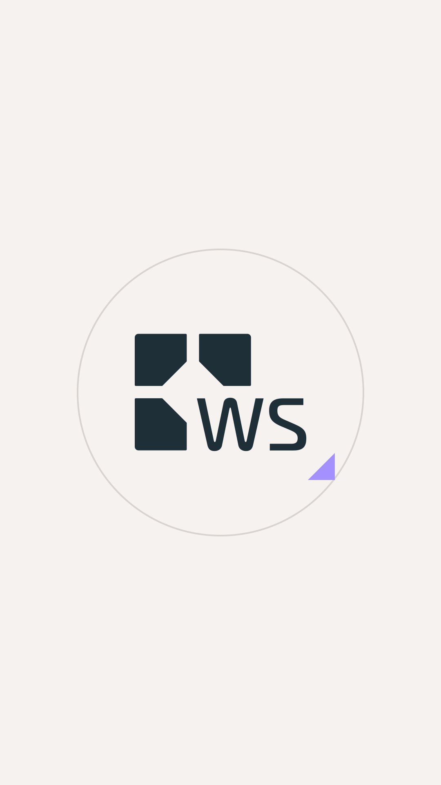
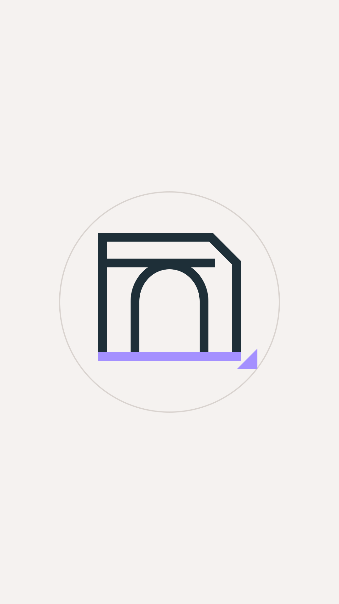
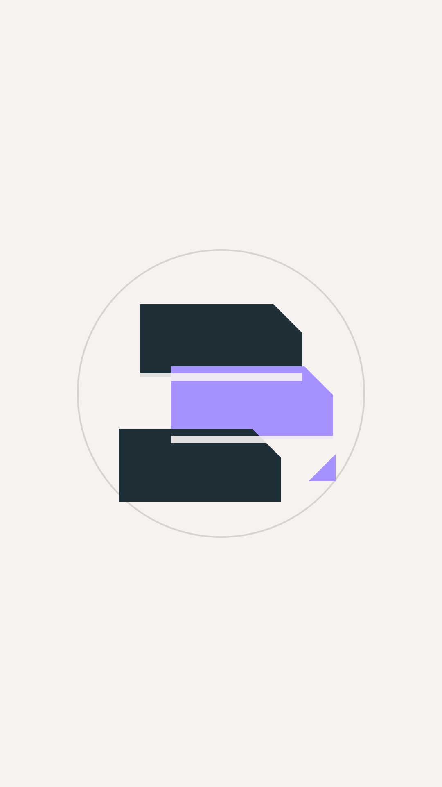
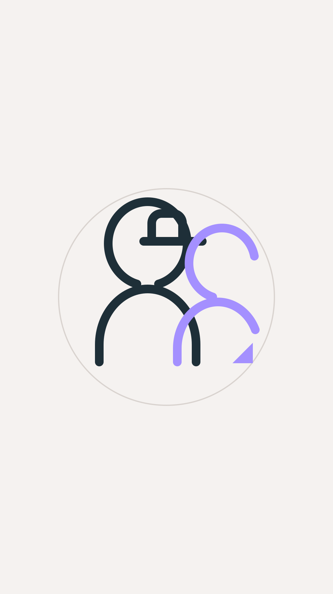

Instagram profile system
Highlight covers
Four upload-ready 1080 × 1920 covers. The preview below simulates the circular profile crop; the title remains Instagram-native beneath each cover.

Work
Download PNG
Services
Download PNG
Team
Download PNGRecommended order: WS · Work · Services · Team. Add Process only when the field-media intake can keep it current with strong material.